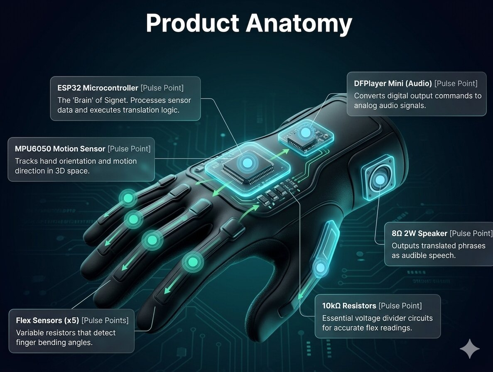

Click the components to see how Signet processes your world.

Click on the labels to see technical details.
From physical gesture to audible speech in milliseconds.
User performs a hand sign
Flex & MPU6050 capture data
ESP32 maps data to words
Speaker outputs the phrase
> System initialized. Waiting for gesture...
The science of converting motion to data.
As the flex sensor bends, its resistance ($R_{flex}$) increases, changing the output voltage ($V_{out}$) readable by the ESP32.
Output Voltage ($V_{out}$): 1.65 V
The minds behind Kinetovox Technologies.
System Architect
Hardware Engineer